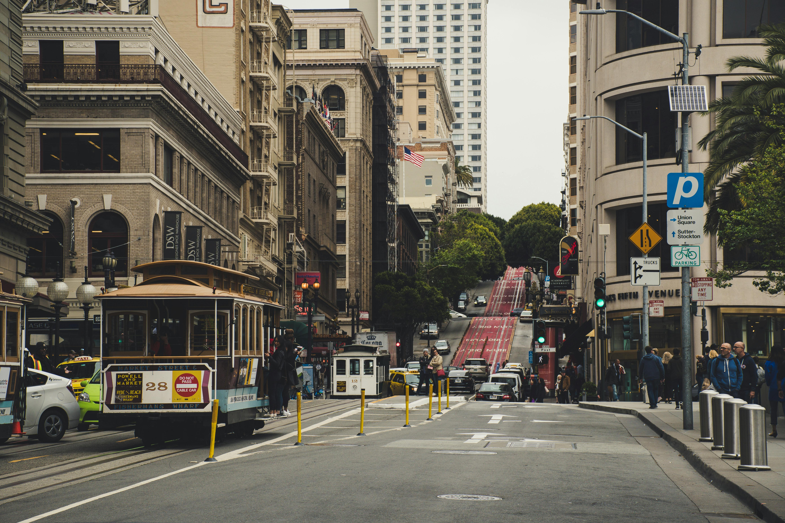
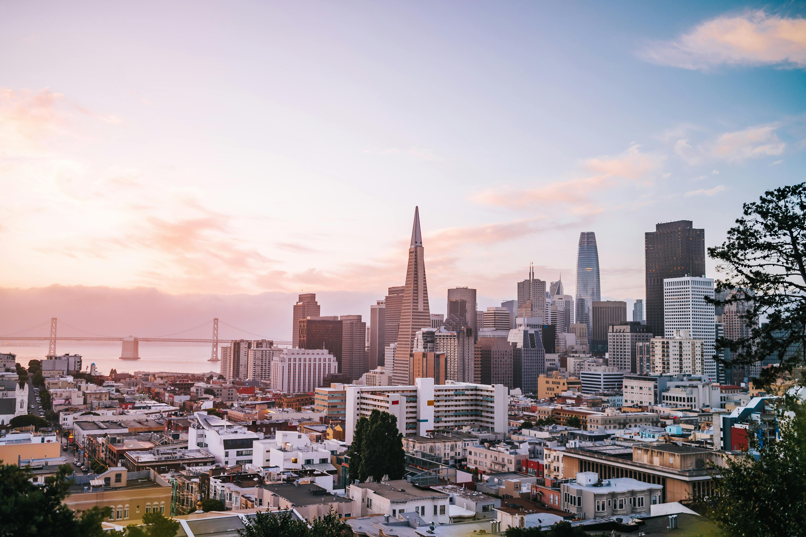

Esplora San Francisco interattivamente
Esplora San Francisco interattivamente

Scopri San Francisco, nata nel 1776 come presidio spagnolo di Yerba Buena lungo la costa frastagliata della California. Con la travolgente Corsa all'Oro del 1849, la città esplose in una frenetica corsa verso il futuro, diventando un crocevia vitale di commerci, culture e avventure. Il suo porto naturale e la posizione sulla baia favorirono una crescita rapida e irrefrenabile, gettando le basi di quella società multiculturale e audace che ancora oggi definisce il suo carattere unico.
Nei decenni successivi, San Francisco ha saputo rinascere dalle macerie: dal disastroso terremoto del 1906 alla sua trasformazione in icona globale dell'innovazione. Il Golden Gate Bridge, aperto nel 1937, incarna la forza visionaria di una città che non teme le sfide e che, anche nella fitta nebbia, continua a brillare come un faro di resilienza e ambizione.
Gold Rush, Controcultura e Innovazione

Dalla febbre dell'oro che travolse la California nel 1849 alla rivoluzione culturale degli anni '60, San Francisco è sempre stata una scintilla di cambiamento per il mondo intero. La leggendaria Summer of Love, i movimenti per i diritti civili e la nascita della cultura LGBTQ+ hanno scolpito un'identità ribelle e visionaria, che pulsa ancora oggi tra i tram storici di Haight-Ashbury, i murales colorati di Mission District e le strade brulicanti di vita e creatività.
Innovativa, sfacciata, inclusiva: San Francisco plasma il futuro dal cuore pulsante della Silicon Valley, alimentando sogni e rivoluzioni tecnologiche, senza mai rinnegare il suo spirito libero. Dai colli avvolti nella nebbia ai moli colorati della baia, ogni angolo racconta una storia di audacia, resistenza e trasformazione continua, in un dialogo incessante tra passato e futuro.